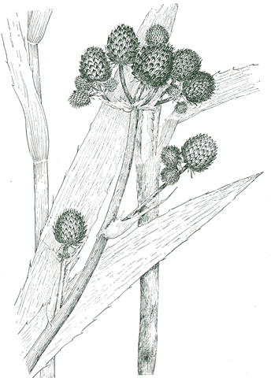

Button snakeroot · Eryngium aquaticum
Garden Map
JC Raulston Arboretum
The gardens open to our guests at 4:30 pm, half an hour before the ceremony in the Rose Garden — come early and wander. This is the arboretum's own visitor map: search or tap any plant to find out what it is.
Map not loading, or want more room? Open it in a new tab. For driving directions, the arboretum is at 4415 Beryl Rd, Raleigh, NC.